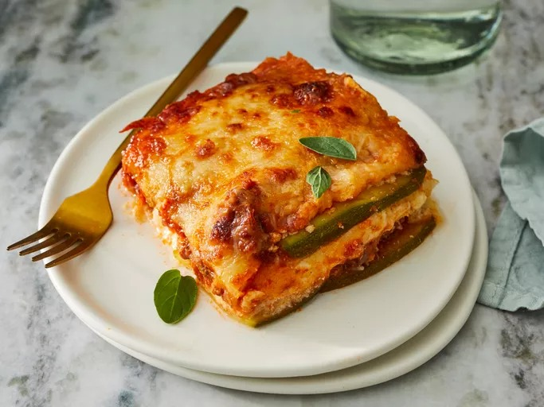

Lasagna

Description
A classic Italian dish made with layers of pasta, meat or vegetables,
cheese, and tomato sauce, baked until bubbly and golden
Ingredients
- Lasagna noodles
- Ground beef
- Marinara sauce
- Ricotta cheese
- Mozzarella cheese
- Parmesan cheese
- Eggs
Steps
-
Boil pasta: Cook in a large pot of salted water per the recipe below.
-
Prepare meat sauce: Cook sausage and beef with onion and garlic. Drain
well, add the pasta sauce & simmer it for a few minutes to thicken.
-
Combine cheese mixture: Stir the cheese mixture together in a bowl.
-
Layer & bake: Layer the meat sauce and cheese mixture with lasagna
noodles and bake until browned and bubbly.